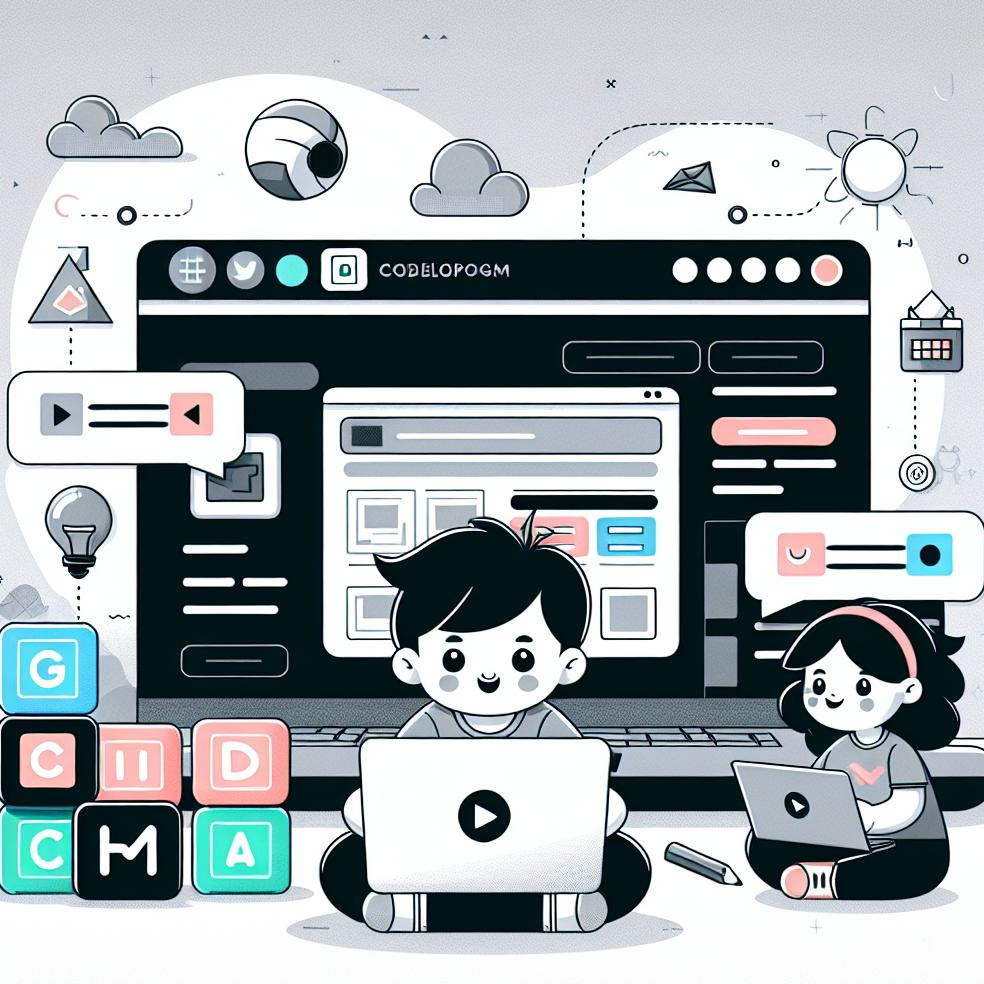

TFG UNIR JAVI PIZARRO
Cómo crear una página web: Guía paso a paso en 2024

Crear una página web puede parecer una tarea abrumadora, pero con la guía adecuada y las herramientas correctas, puedes lograrlo de manera exitosa. En esta guía paso a paso, te mostraré cómo crear una página web en 2024, desde la planificación inicial hasta la publicación y promoción de tu sitio. Sigue leyendo para descubrir todos los pasos necesarios para crear una página web exitosa.
Define tu presupuesto y equipo necesario
Antes de comenzar a crear tu página web, es importante que definas tu presupuesto y el equipo necesario. Determina cuánto estás dispuesto a invertir en tu sitio web, ya sea en el registro de dominio, el servicio de hosting, el diseño y desarrollo, y cualquier otra herramienta o servicio que necesites. También considera si necesitarás contratar a profesionales externos, como diseñadores o desarrolladores web, para ayudarte en el proceso.
Registra un dominio personalizado
El primer paso para crear una página web es registrar un dominio personalizado. Un dominio es la dirección única de tu sitio web en Internet, como www.tupaginaweb.com. Elige un nombre de dominio que sea relevante para tu negocio o proyecto, fácil de recordar y que refleje la identidad de tu marca. Puedes registrar tu dominio a través de diferentes proveedores de dominios en línea.
Elige un servicio de hosting
Después de registrar tu dominio, necesitarás elegir un servicio de hosting. El hosting es el espacio en línea donde se almacenarán los archivos de tu página web y permitirá que tu sitio esté disponible en Internet. Hay diferentes opciones de hosting disponibles, como hosting compartido, hosting dedicado y hosting en la nube. Considera tus necesidades y presupuesto para elegir el servicio de hosting adecuado para tu página web.
Selecciona una plataforma de CMS o ecommerce
Una vez que hayas registrado tu dominio y elegido un servicio de hosting, es hora de seleccionar una plataforma de CMS (Sistema de Gestión de Contenidos) o ecommerce. Un CMS te permitirá crear y administrar el contenido de tu página web de manera fácil y rápida, mientras que una plataforma de ecommerce te permitirá vender productos en línea. Algunas opciones populares de CMS incluyen WordPress, Joomla y Drupal, mientras que Shopify y WooCommerce son plataformas de ecommerce populares.
Define el objetivo de tu página web
Antes de comenzar a trabajar en el diseño y contenido de tu página web, es importante que definas claramente el objetivo de tu sitio. ¿Quieres promocionar tu negocio, vender productos en línea, compartir información o simplemente tener presencia en Internet? Al tener un objetivo claro, podrás enfocar tus esfuerzos en crear un sitio web que cumpla con tus necesidades y las de tus visitantes.
Conoce a tu público objetivo
Una vez que hayas definido el objetivo de tu página web, es importante que conozcas a tu público objetivo. ¿Quiénes son tus visitantes ideales? ¿Qué tipo de contenido les interesa? ¿Cuáles son sus necesidades y deseos? Al comprender a tu público objetivo, podrás crear un sitio web que les resulte atractivo y relevante, lo que aumentará la probabilidad de que se queden en tu sitio y realicen las acciones que deseas.
Trabaja en el contenido de tu página web
El contenido es uno de los aspectos más importantes de tu página web. Es lo que atraerá a los visitantes y los mantendrá interesados en tu sitio. Crea contenido relevante, útil y de calidad que responda a las necesidades de tu público objetivo. Utiliza palabras clave relevantes para mejorar tu posicionamiento en los motores de búsqueda y asegúrate de que tu contenido sea fácil de leer y comprender.
Haz que tu página web sea intuitiva y fácil de navegar
La navegación de tu página web es otro aspecto crucial para crear una buena experiencia de usuario. Haz que tu sitio sea intuitivo y fácil de navegar, con menús claros y organizados, enlaces internos y externos relevantes, y una estructura de página coherente. Asegúrate de que los visitantes puedan encontrar fácilmente la información que están buscando y que puedan moverse por tu sitio sin problemas.
Optimiza tu página web para los motores de búsqueda
Para que tu página web sea visible en los motores de búsqueda, es importante que la optimices para SEO (Search Engine Optimization). Utiliza palabras clave relevantes en tu contenido, metaetiquetas y descripciones, y asegúrate de que tu sitio esté bien estructurado y tenga una velocidad de carga rápida. Considera también la posibilidad de crear contenido regularmente y obtener enlaces de calidad hacia tu sitio para mejorar tu posicionamiento en los motores de búsqueda.
Realiza pruebas de usabilidad
Antes de publicar tu página web, es recomendable realizar pruebas de usabilidad para asegurarte de que tu sitio sea fácil de usar y cumpla con las expectativas de tus visitantes. Pide a amigos, familiares o incluso a usuarios externos que prueben tu sitio y te den su opinión. Toma en cuenta sus comentarios y realiza los ajustes necesarios para mejorar la experiencia de usuario.
Difunde y promociona tu página web
Una vez que hayas publicado tu página web, es importante que la difundas y promociones para atraer visitantes. Utiliza estrategias de marketing digital como las redes sociales, el correo electrónico y el SEO para aumentar la visibilidad de tu sitio. Considera también la posibilidad de colaborar con influencers o realizar campañas publicitarias para llegar a un público más amplio.
Considera agregar un carrito de compras
Si tu objetivo es vender productos en línea, considera agregar un carrito de compras a tu página web. Un carrito de compras te permitirá mostrar tus productos, gestionar inventario, procesar pagos y realizar envíos de manera eficiente. Puedes utilizar una plataforma de ecommerce como Shopify, WooCommerce o Magento, instalar un plugin específico o incluso programar uno desde cero.
Utiliza herramientas para crear tu página web
Existen muchas herramientas disponibles en el mercado que te facilitarán la creación de tu página web. Algunas opciones populares incluyen Tiendanube, WordPress, Wix, Squarespace, Webnode, Weebly, Jimdo, Duda, Gator Builder, Webflow, One.com, Mozello, GoDaddy, entre otras. Investiga y elige la herramienta que mejor se adapte a tus necesidades y habilidades técnicas.
Elige una plataforma de ecommerce
Si tu objetivo es vender productos en línea, es importante que elijas una plataforma de ecommerce adecuada. Algunas opciones populares incluyen Tiendanube, Shopify, WooCommerce, Magento, BigCommerce, entre otras. Investiga las características, precios y facilidad de uso de cada plataforma para tomar una decisión informada.
Selecciona un diseño para tu página web
El diseño de tu página web es otro aspecto importante para captar la atención de tus visitantes. Elige un diseño que sea atractivo, profesional y que refleje la identidad de tu marca. Considera la estructura de página, los colores, las fuentes y las imágenes que utilizarás en tu sitio. Si no tienes habilidades de diseño, considera contratar a un diseñador web para que te ayude.
Publica tus productos en tu página web
Si estás utilizando una plataforma de ecommerce, es hora de publicar tus productos en tu página web. Agrega imágenes de alta calidad, descripciones detalladas y precios atractivos para cada producto. Organiza tus productos en categorías y utiliza etiquetas relevantes para facilitar la búsqueda de los visitantes. Asegúrate de que la información de tus productos esté actualizada y que los visitantes puedan realizar compras de manera fácil y segura.
Configura los métodos de pago y envío
Si estás vendiendo productos en línea, es importante que configures los métodos de pago y envío en tu página web. Ofrece diferentes opciones de pago, como tarjetas de crédito, PayPal o transferencia bancaria, para adaptarte a las preferencias de tus clientes. También configura los métodos de envío y establece tarifas de envío claras y justas. Asegúrate de que tus métodos de pago y envío sean seguros y confiables.
Aprovecha los beneficios de tener una página web
Tener una página web ofrece numerosos beneficios para tu negocio o proyecto. Te permite tener presencia en línea las 24 horas del día, los 7 días de la semana, llegar a un público más amplio, captar la atención de tus visitantes más rápido, responder rápidamente a las preguntas y consultas de los visitantes, y automatizar tus procesos de venta y atención al cliente. Aprovecha al máximo estos beneficios para hacer crecer tu negocio.
Agrega un carrito de compras a tu página web
Si tu objetivo es vender productos en línea, agregar un carrito de compras a tu página web es fundamental. Un carrito de compras te permitirá mostrar tus productos, gestionar inventario, procesar pagos y realizar envíos de manera eficiente. Puedes utilizar una plataforma de ecommerce como Shopify, WooCommerce o Magento, instalar un plugin específico o incluso programar uno desde cero. Asegúrate de que tu carrito de compras sea fácil de usar y seguro para tus clientes.
Considera el costo de crear una página web con carrito de compras
Al considerar agregar un carrito de compras a tu página web, es importante tener en cuenta el costo asociado. El costo puede variar dependiendo de la plataforma de ecommerce que elijas, los plugins o extensiones que necesites, y cualquier otro servicio adicional que requieras. Investiga y compara las opciones disponibles para encontrar la solución que mejor se adapte a tu presupuesto y necesidades.
Crear una página web puede ser un proceso emocionante y desafiante, pero con la guía adecuada y las herramientas correctas, puedes lograrlo con éxito. Sigue esta guía paso a paso y estarás en el camino correcto para crear una página web exitosa en 2024.